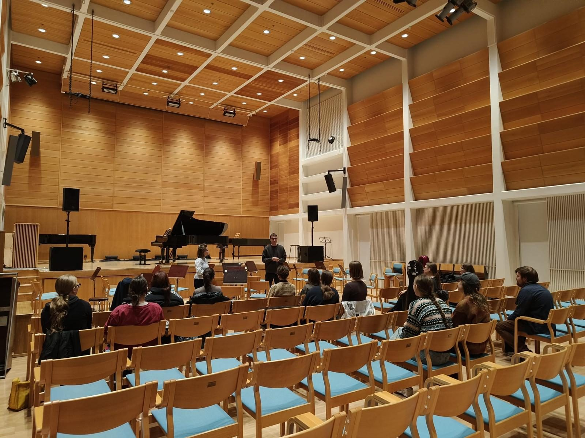
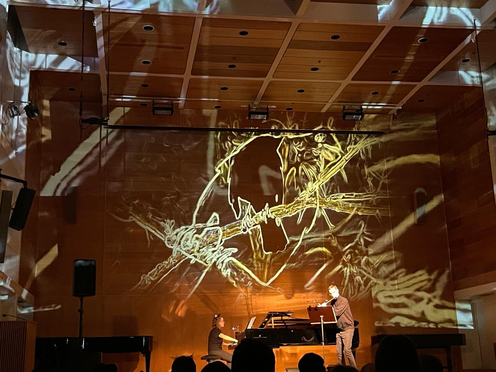
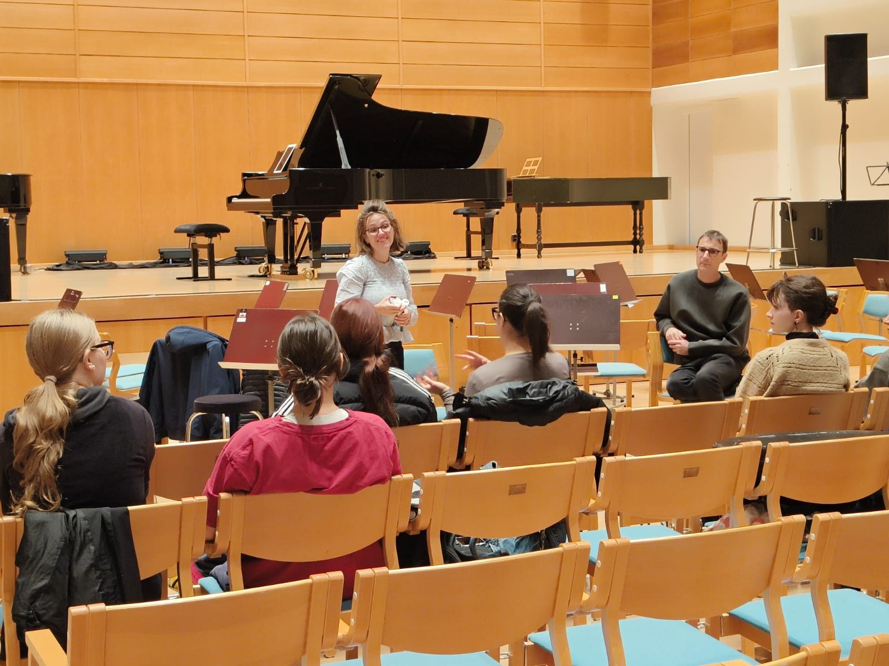
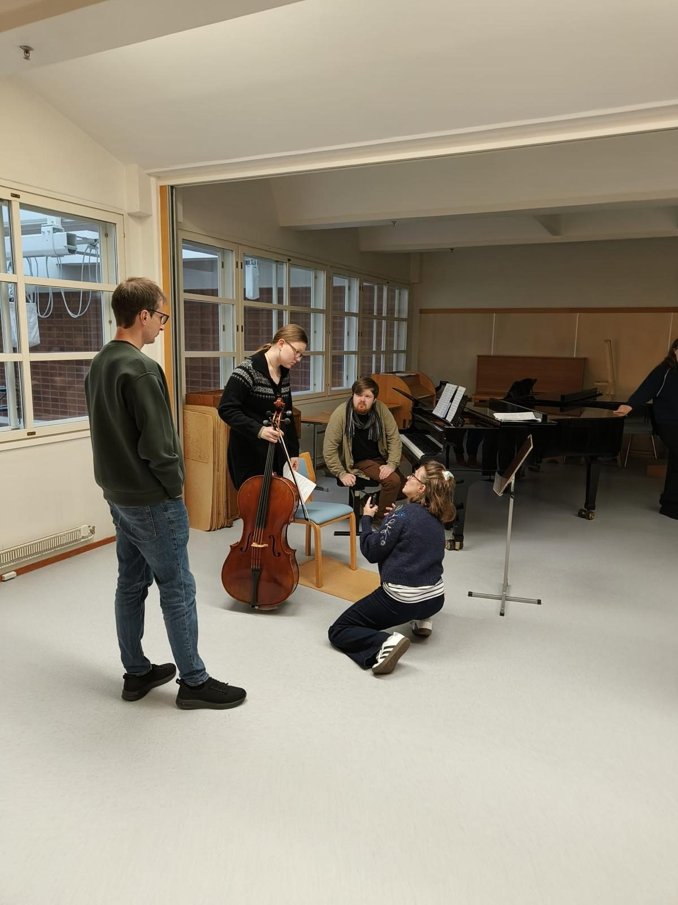
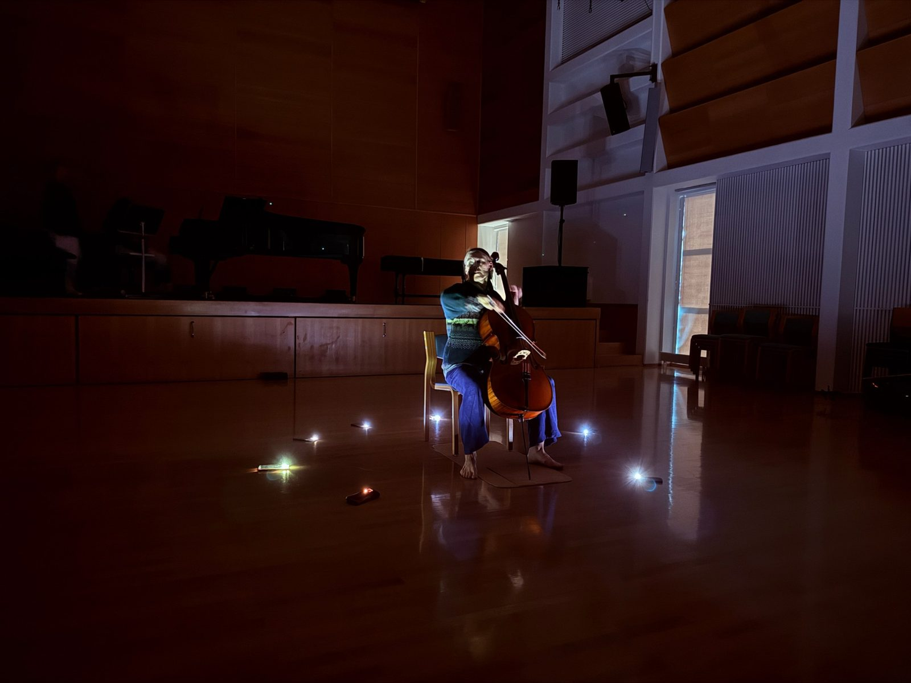

Five days in Kuopio
The conservatory asked us how we work rather than what we play. Five days on taking classical music out of its protocol: a concert, a long talk, a workshop with interactive visuals and lights carried around the hall, and two masterclasses.

The invitation from the Kuopio Conservatory was an unusual one, and the reason we said yes: they did not ask us to come and play a recital. They asked us to show how we work. That is a harder thing to answer in words than on a stage, so we spent five days in Finland answering it both ways.
The concert
The public concert was next door, in the chamber hall of the Kuopio Music Centre. We played Lili Boulanger and Messiaen, Janáček, Debussy and Clara Schumann in our own arrangements for flute and piano, two of Falla's Siete canciones populares españolas, the Frank Martin Ballade, and one piece of Guillermo's own. We built the evening the way we build any CreArtBox evening. The music comes first and everything else is put at its service: the image, the light, where the players stand, when they walk. Nothing on stage is decoration. If a projection or a lamp is not doing the same work the music is doing at that moment, it comes out.

That is quick to write and slow to rehearse.
The talk
Then a talk, which we had planned to keep short and which ran long because the questions kept coming. We talked about how we put a programme together, about running a season in New York, about CreArtBox, and about Festival ADAR in the villages of Asturias, which is the same work in an almost opposite setting: a hórreo instead of a hall, a hundred people instead of three hundred, and no lighting rig unless you bring it.
The students asked about all of it. How do you choose the music. Who decides what the visuals do. How do you pay for any of this. What happens when the technology fails ten minutes before the audience comes in. Some of them we are still answering ourselves after twelve seasons.

Taking Falla apart
The workshop was the part we were most curious about. We started with a group of conservatory musicians playing repertoire from different styles, and then began to take it apart.
The visuals were interactive, made in Max, so the image answered what was being played instead of running alongside it on its own clock. The lights were not on stands: the musicians carried them, and moved them around the room as they played, which changes where the audience looks and, more interestingly, changes how the players listen to each other.

We worked for a while on Manuel de Falla, disintegrating the music as we went. In one exercise we took the opening bars of a piece and repeated them into a loop while the others walked slowly around the cello. By the end the music, the movement and the light were not three things happening at the same time. They were one thing.

Out of the protocol
Classical music arrives with a protocol: where the players sit, what they wear, how far the platform is from the first row, when an audience is allowed to make a sound. Very little of it was decided by the music. It was inherited, and it is useful until it stops being useful. What we try to do, and what we spent the week doing with the students, is to take it apart one decision at a time and look at each piece of it.
The hall was dark and the lamps were on the floor, so the audience was not watching a platform; it was watching a person. A player who stands phrases differently from a player who sits, because the body is part of the instrument. None of this makes the Falla better or worse. It makes the decision visible, and a decision you can see is a decision you can take.
Three things we keep coming back to, and the reason we teach it this way:
Another discipline is material, not decoration. Video, light and movement have a rhythm of their own, and left on their own clock they compete with the music instead of serving it. The visuals were made in Max so that the image answered what was being played: that has to be rehearsed like any other part, and it fails like any other part.
Staging is ensemble work. A chamber group already negotiates everything, all the time: tempo, balance, who leads a phrase, who gives way. Deciding who carries which lamp and who walks when is the same skill applied to the room, and it asks the players to take responsibility for the production rather than only for their own line.
Creativity is a habit, and it can be practised. A conservatory teaches the repertoire thoroughly and asks less often what the performer would do with it. Most of the students had never been asked how a piece should be presented, only how it should be played. By the last day they were proposing things we had not thought of, which is the part of the week we are still thinking about.
The masterclasses
Josefina taught piano and Guillermo taught flute, in masterclasses that ran all week alongside everything else. These were the quietest hours of the week: one player, one piece, one problem at a time.
Every one of the participants was a student of the conservatory, and they arrived wanting to try things. Nobody had to be convinced to walk around a cello with a lamp in their hand, and that is not always how it goes.
We came home with notes and a few ideas for the spring, and with the impression that what happens in Kuopio deserves to be better known outside Finland. Thank you to the conservatory, to the staff who made the technical side possible, and above all to the students.
Guillermo and Josefina